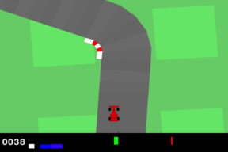
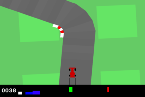
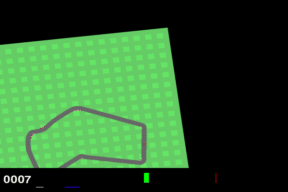
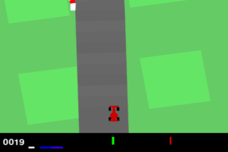
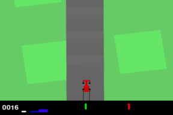
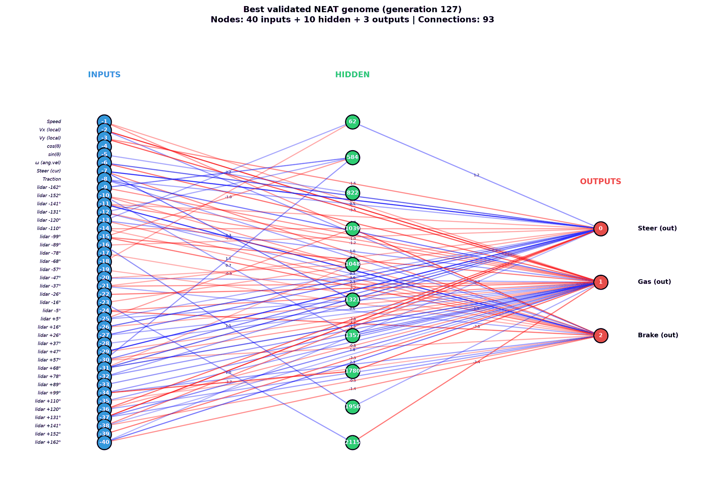

CarRacing-v2 · CPU only · Dec 2025 → Oct 2026
Teaching a car to race, one fix at a time
We started with neuroevolution and a car that wandered off into the grass. This page covers each step after that: what we changed, why, and what the numbers said. It includes the step that made things worse, the twist (the reward fix we credited for our biggest jump had never actually run), and how we came back to evolving networks in the end.

Where we started
CarRacing-v2 normally hands the agent a 96×96 image each frame. Learning from pixels needs a GPU and patience, and we had neither, only a laptop CPU. So from the very first commit we gave the car a compact 40-number description of the world:
- 8 dynamics values: speed, velocity in the car's own frame, heading (cos/sin), spin rate, steering angle, and traction (how many wheels are on asphalt).
- 32 "lidar" rays fanned around the car. Each reports how far the road extends in that direction, read straight from the Box2D track polygons.
The network outputs three numbers: steering, gas and brake.
The first learner was NEAT, which evolves both the weights and the shape of small networks. A population of 60 networks started with no hidden layer (40 inputs wired straight to 3 outputs). After 62 generations the best network had grown 10 hidden nodes and 119 connections, including a recurrent loop that fed the last steering command back into the gas decision. It scored 636 against a target of 700.
The catch was speed. Every fitness evaluation is a full 1000-frame episode for each of 60 genomes, run on one CPU, and progress had flattened out. After two days we switched algorithms but kept the 40-number state, which carried over unchanged.
Looking back, that 636 was also hard to trust. Each genome drove its own random track, so a network could win just by drawing an easy one. Much of its fitness came from a speed bonus that paid out even on grass. And it had the same broken traction input described in bug 1. We fixed all three when we came back to NEAT.
Step by step
Each card shows what changed, the settings, and what came out. Rewards are the average episode reward while training (in the December runs the penalty never fired, so this is effectively the game score); the results section compares every model on the same tracks with the raw game score. GIFs show each model's best checkpoint on the same track.
0 · NEAT on a lidar state vector
We built the state wrapper and evolved networks with neat-python, and added network visualisations and fitness plots to watch the topology grow.
1 · Switch to PPO fast, can't turn
We replaced NEAT with Stable-Baselines3 PPO: a 2×256 MLP, 4 parallel environments and 1.5M steps (about 4 h). The wrapper was meant to subtract a mild penalty when traction dropped below 95%.
TensorBoard showed why it never settled: the policy's action noise grew from 1.0 to 1.94 during training. The entropy bonus was paying the agent to stay random. *Settings are read back from the saved checkpoint. As it turned out, the penalty never ran (bug 1).

2 · Diagnose it: the reward paid for cutting corners
We wrote plotting scripts and a training analysis report. The key finding is arithmetic: one road tile is worth +10, and a whole frame fully on grass cost only −0.95. Cutting a corner that skips a curve was simply profitable (the math is below). The plan: make leaving the road cost more than it gains, rather than train longer. The arithmetic was right. What we didn't check was whether the penalty term ever fired.
3 · "Strict reward" +106% peak
We raised the penalty 15× and tightened the threshold so that even one wheel on the grass would cost reward. In the same change we cut the entropy bonus from 0.015 to 0.005 so the policy could commit.

4 · …then it collapsed −68%
We let the strict run continue to 4.5M steps, about 12 hours. Instead of getting better, it got steadily worse.
The automatic "best model" checkpoint saved us: it still held the 500k-step peak.
5 · Stop early, add multi-lap no effect
We re-ran the strict recipe and stopped at 450k, near the peak; its best evaluation was 827. Then we added a multi-lap mode: after finishing a lap, the car gets +100 and keeps racing, so faster drivers score more.

6 · Clean-up: fix the bugs, stabilise training
On revisiting the project we found four bugs (details). The worst: the off-track penalty had never fired in any run. Every fix comes with tests that fail on the old code. We tidied the repo, then went after the collapse from step 4:
- Linear learning-rate decay (
--lr-schedule linear), so updates shrink as the policy matures. - A KL early-stop (
--target-kl 0.02), which ends an update once the policy has moved far enough. - A penalty that works. The strict 15 / 0.99 setting is now real, so this is the first run where grass actually costs reward.
- 2000-step episodes (
--max-episode-steps 2000). A lap takes about 860 frames, so with the default limit of 1000 a second lap was nearly impossible and the multi-lap bonus could never pay twice.
7 · Retrain with everything fixed learned to park
We retrained with an off-track penalty that actually applies, a working multi-lap mode, LR decay, KL early-stop and domain randomisation.

8 · Back to NEAT evolving
We went back to the original idea of evolving the network itself, this time with the lessons from PPO. Details below, and you can explore the evolved network on its own page.

Back to NEAT
NEAT was the idea this project started with, and the PPO detour taught us what it had been missing. The new version keeps the same 40-number state, the same network outputs, and neat-python. What changed is how genomes are judged:
- Same tracks for everyone. In each generation, all 100 genomes drive the same 3 tracks, with new tracks drawn every generation. Before, each genome drew its own random track, so a "winner" could just be lucky.
- Fitness is the game's own score. No hand-made speed bonus: tiles collected minus time. Driving on grass earns nothing, because it reaches no tiles.
- Held-out validation. Each generation's champion also drives 5 fixed tracks it never trains on. The saved "best genome" is the one with the best validation score, not the luckiest training score. The benchmark below uses yet another 5 tracks.
- Stop wasting time on stuck cars. An episode ends after 100 frames without reaching a new tile, and the rest of the time penalty is still charged, so stopping early never pays.
- 12× faster simulation. CarRacing was drawing a 96×96 image every frame that nobody looked at, and the lidar tested points one at a time in Python. Skipping the drawing and vectorising the lidar took a step from ~10 ms to under 1 ms, with identical results (there's a test for that).
Fitness per generation
Best and mean training fitness (raw score on that generation's 3 tracks), plus the champion's score on the 5 held-out validation tracks.
What evolution found
In 150 generations (5.2 hours on a laptop CPU, less than half the planned PPO run) NEAT produced our best driver yet. The best genome came from generation 127 and scores 857 on the validation tracks and 831 on the benchmark tracks it had never seen. The best PPO model scores 738 there. It finished 2 of the 5 benchmark tracks within 1000 frames, scored over 900 ("solved" territory) on both, and kept all four wheels on the road for every single frame. The best PPO models spent 19–24% of frames with a wheel on the grass.
The fitness never mentions grass. It only counts tiles and time. Staying on the road emerged because the road is where the tiles are. The network grew from a plain 40→3 wiring to 10 hidden nodes, while pruning connections from 120 down to 93. The traction input, which the old version never saw change, is now wired in.
Run 2: two more bugs, and an honest null result
Looking closer at the winner turned up two more problems:
- The car could never release the brake. The network's outputs already pass through
tanh, and the decoder appliedtanha second time. Gas was therefore capped at 0.88 and the brake never went below 0.12. The best genome braked at exactly 0.119 on every frame of every track. At that setting the car needs about 2.5× longer to reach speed. The car finished every benchmark track, but ran out of the 1000-frame budget on the three longest. - Speciation never switched on. NEAT protects new structure by grouping similar networks into species. Our genomes were never far enough apart to split, so run 1 had a single species in 135 of its 150 generations. An automatic threshold now aims for about 6 species.
Run 2 continued from run 1's generation 148 with both fixes for another 100 generations (3.3 hours). The population stayed diverse (a median of 7 species) and learned to use the new range: it reaches a top speed of 80 instead of 60, and controls its speed mostly with the throttle. But its best genome (generation 236, 17 hidden nodes) scores 821 on validation and 810 on the benchmark tracks, slightly below run 1's 857 and 831. More freedom and more diversity didn't produce a better driver in 100 generations. Both are kept, and you can compare them track by track on the network page.

The reward math (as intended)
CarRacing pays about +10 for every new road tile (1000 split across ~100 tiles) and charges −0.1 per frame. Our wrapper adds an off-track penalty each frame:
penalty = offtrack_penalty × max(0, traction_threshold − traction)Take a corner that costs 10 frames of driving on grass (traction 0) but reaches the next tile sooner:
| Setting | Penalty, 10 frames on grass | vs. one tile (+10) | Grass stops paying below traction |
|---|---|---|---|
| Baseline: 1.0 / 0.95 | −9.5 | still profitable | none: even full grass costs less than a tile |
| Moderate: 5.0 / 0.98 | −49 | 5× the gain | ~0.78 |
| Strict: 15 / 0.99 | −148.5 | 15× the gain | ~0.92 |
This analysis was sound, but until the clean-up every row behaved like "no penalty at all": the traction input was stuck at 1.0. v2 is the first run where the strict row really applies.
Bugs we found while cleaning up
1. The off-track penalty never fired
Traction was computed from a wheel attribute called ground_traction. Gymnasium's wheels don't have one, so the list was always empty and the fallback value, 1.0 ("all wheels on road"), was used every frame. The penalty 15 × max(0, 0.99 − 1.0) is always zero. The agent's traction input was also a constant. Every run from December, "strict" included, trained with no penalty at all.
Fix: a wheel is on the road exactly when it touches a road tile (wheel.tiles), the same test the physics engine uses for grass friction. A test drives onto the grass and checks that the penalty matches the formula exactly.
2. Multi-lap never worked, and it hid out-of-bounds
The wrapper waited for the game to say terminated before treating a lap as complete. But in gymnasium 0.29.1 a finished lap is reported as truncated, so real laps simply ended the episode. The one event that did trigger the branch was driving off the map: the wrapper cancelled the −100 termination, paid a +100 "lap bonus", and let the car keep going. Even if a lap had been caught, the game's new_lap flag and each tile's "visited" flag were never reset. That would have paid the bonus on every following frame and no tile rewards on lap two.
Fix: detect laps from the game's own new_lap flag, reset it along with the tile flags, and leave all other endings alone. Five tests cover this; all five fail on the old code.
3. Evaluation runs overwrote the training log
The evaluation environment and training environment #0 both wrote to monitor/0.monitor.csv. Old logs contain garbled lines such as r,l,t-45.98… and 4967,799 where the two writers collided. Evaluation now logs to its own eval_monitor/, and episodes also record laps_completed.
4. Flags that didn't do what the docs said
--allow-multiple-laps was always on: it was a store_true flag that defaulted to true. The documented --no-allow-multiple-laps didn't exist, and an internal helper defaulted to a different penalty (0.5 / 0.9) than everything else. Also, play.py always scored with the default penalty, so its rewards couldn't be compared with training. All of these are fixed.
Results
Training reward over time, December runs
Rolling mean of 100 episodes. The penalty never fired in these runs, so this is effectively the raw game score with 1000-frame episodes.
Show as table
v2 training reward
Rolling mean of 100 episodes, on its own scale: v2 is the first run where grass really costs reward (up to −14.85 per frame), and its episodes are 2000 frames long. Its numbers can't be compared directly with the chart above; the benchmark below can.
Same tracks, same rules: raw CarRacing score
Each model's checkpoint drives the same 5 tracks deterministically for up to 1000 frames. Scoring uses the game's own reward, with no shaping and no lap bonus, so every stage is judged the same way. 900+ counts as "solved" for CarRacing. "Off-track" counts frames with at least one wheel off the road, measured with the fixed traction sensor.
Show as table
What we learned
- Log every reward term separately. A penalty that is always zero looks exactly like a penalty the agent has learned to avoid, unless you plot it.
- Judge every candidate on the same tracks. Random tracks per genome made old NEAT scores partly luck. Shared tracks per generation plus held-out validation fixed that.
- Change one thing at a time. Penalty and entropy changed together, so we credited the wrong one for months.
- More steps can hurt. Keep the best checkpoint, watch KL and clip fraction, and decay the learning rate.
- A feature isn't done until a test proves it changes behaviour. Identical curves before and after "multi-lap" were the giveaway.
- Watch exploration. An entropy bonus that is too high can quietly beat the task reward. Action noise rising during training is the warning sign.
- A compact state works. 40 numbers and a small MLP learn to drive on a laptop CPU in a few hours.
Reproduce it
python -m venv .venv && source .venv/bin/activate
pip install -r requirements.txt
pytest tests/
# the v2 recipe (~12 h on a 4-core CPU)
python -m carracing_ppo.train --total-timesteps 4500000 --num-envs 4 \
--offtrack-penalty 15 --traction-threshold 0.99 --entropy-coef 0.005 \
--lr-schedule linear --target-kl 0.02 --max-episode-steps 2000 \
--domain-randomize --lap-completion-bonus 100 \
--checkpoint-dir outputs/checkpoints_v2 --log-dir outputs/logs_v2 --seed 42
# watch it drive
python -m carracing_ppo.play --model outputs/checkpoints_v2/best_model.zip --deterministic
# rebuild this page's data and GIFs
python scripts/build_site_data.py && python scripts/benchmark.pyNext steps
- Ablate entropy vs. penalty properly: same seed, one change per run.
- A speed-dependent off-track penalty, so cutting a corner at high speed costs more than drifting wide at low speed.
- Benchmark on more tracks (5 is a small sample) and report confidence intervals.
- Try pixels plus the lidar state, now that the reward is trustworthy.